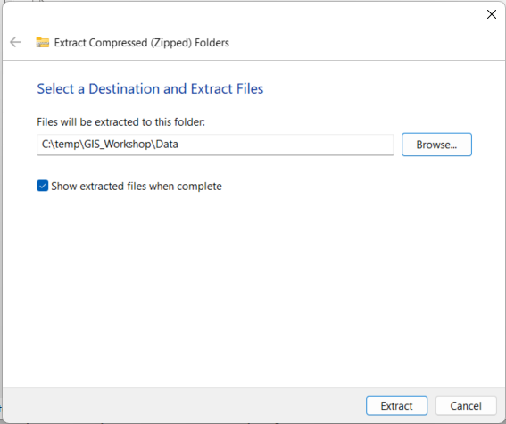
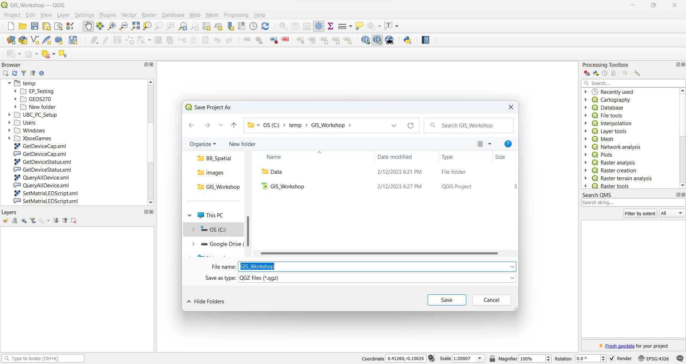
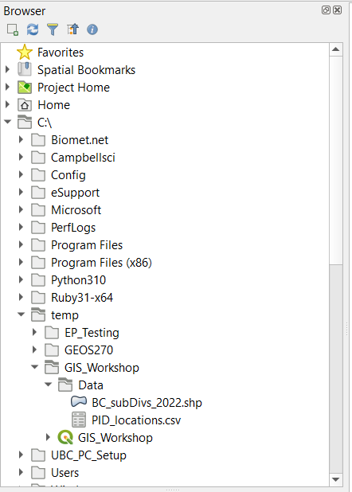
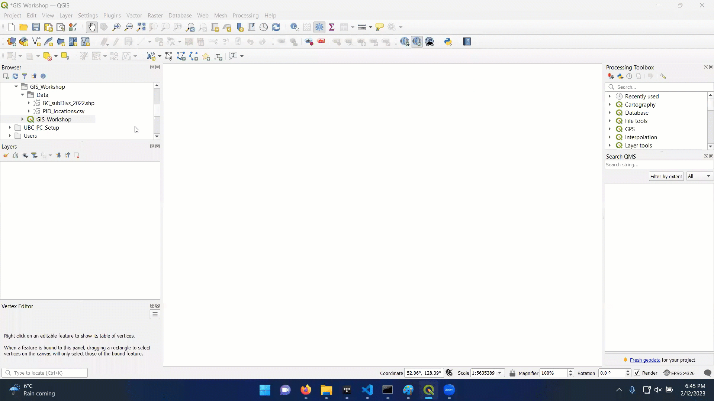
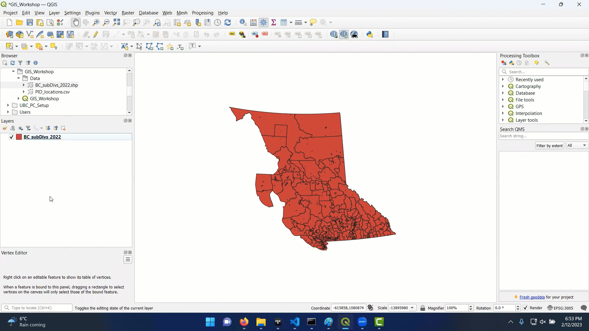
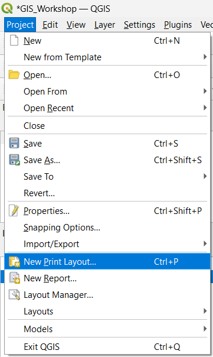

Using QGIS
Downlodading QGIS
We’ll be working with the latest version of QGIS: v 3.28.3 which you can download here.
- Set QGIS up before attending the workshop if you’d like to follow along.

1 Setting up a Project
Downloading the Data
Click here to download the data for the workshop. Extract the data to your project folder.
- Tip: I like to start every project in a “clean directory”.
- Create a folder called “GIS_Workshop” in your working directory. This can be any directory, just make sure you remember where it is! In this example, I’m working in C:
- Create another folder within that called “Data” - this can be where you save all the data for a project
- You can then extract the .zip file you downloaded to “GIS_Workshop"

Opening QGIS
You can then open QGIS, which will create an new “untitled” project. Click Project>Save in the top left, and save the project in “base” of your new project directory.
- Don’t save in the data folder. You want your project file to be in the first thing you see when you open a your project.

2 Adding Data
You should be able to find your project folder in the directory browser.
- Expand the Data folder so you can see the contents.

Importing a .shp file
Try clicking on BC_subDivs_2022.shp and dragging it to your layers tab.
- If you get an error message, take note of what it says, but ignore it for now.

It is very important to check what coordinate system your data layers are in when import a new layer.
- This is the first thing you should do each time you import a layer.

Importing a .csv file
The point data (police involved deaths) is stored in a different format. To import it, you must go to Layers>Add Layer>Add Delimited Text Layer. If you try to drag it onto the map the same way you did with the .shp file, it won’t show anything.
- csv: comma separated value format is a tabular data format with values separated by commas. This isn’t a spatial data format, though it can contain spatial data. We just need to go through some extra steps to make it work.
- This file has numerous columns, including point locations (Lat/Long)
- We need to specify the coordinates (x,y data) and coordinate system (WGS 1984) when importing our data
- If you did the import correctly, the new layer should appear overtop the old, even though the are in different coordinate systems.
- This is know as “project on the fly”
3. Reprojecting a layer
The PID layer is showing point locations that are recorded in Latitude and Longitude using the WGS 1984 coordinate system. This is different than the BC Albers Equal Area projection we are using for the census data layer (BC_subDivs_2022). Its best practice to ensure all data layers are always in the same projection before doing anything else.
- Processes may still run when the layers have different coordinate systems, but the results will be less accurate and the processing will take longer because the software will have to reproject layers on the fly.
- It is easier to just reproject the data once.
- Search the Processing Toolbox for the Reproject function
- Reprojecting will create a new layer in the desired coordinate system.
- Make sure to reproject the PID_Locations layer
- Make sure to put it in the BC Albers projection
- You can then remove the old PID_locations layer as we don’t need it anymore
- You can also change the point style to help make sure things are more visible
4. Point in Polygon Analysis
A common task in GIS is to count how many points are contained in a given polygon. QGIS has a simple tool for that and we’ll use it to count how many police involved deaths there have been per census subdivision.
- This will create a new layer, with a “NUMPOINTS” column that will tell us how many PID there were in each subdivision.
- Open the attribute table to see the new column
- Remove the old layer, and change the symbology of the new layer to show the number of incidents per subdivision
- You can use the “Natural Breaks” classification method.
5. Calculate a New Field
The number of police involved deaths in a subdivision will be strongly correlated with the total population. We can normalize by population and calculate the PID rate to reveal new patterns in the dataset.
Open the attribute table then open the field calculator
Use the expression window to define the expression: \[ 'NUMPOINTS' / 'Pop\_Total' * 10000 \]
This will give us the rate of police involved deaths per 10,000 residents
- Note, the rate is over the full period of record. To get it per year, you would need to divide by length of the record as well
6. Make a Map
There are many options for creating a map layout in QGIS. Far too much to cover here. But to get started, if you’d like to experiment on your own, you can create a new map layout. Hovering over the buttons in the layout window + searching on google can give you hints on what to do.

Add the Map
Once you have the layout window open, you can add a new map frame, legend, title, and any other necessary elements.